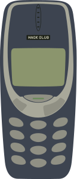
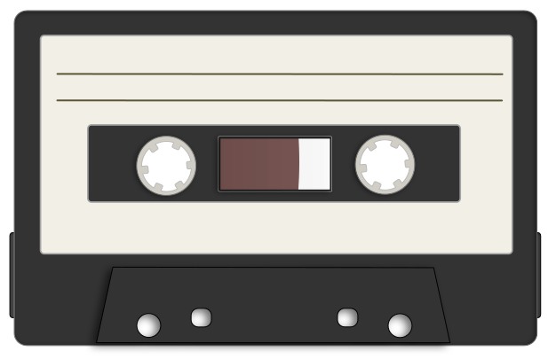

Code a beat, get a cassette
A Club YSWS where you program music with real code! Write loops and sequences. Hear them instantly. Ship a 1-minute track. Get it pressed on a compilation tape and get a gift card!
Learn more →Ringtone uses text-based live coding tools such as Strudel (JavaScript, runs in your browser) and Sonic Pi (Ruby, desktop app) to turn your code into sound. You write loops, sequences, and effects using real programming concepts: arrays, variables, functions. The output is music you made from scratch!
No music experience needed, code IS your instrument. If you've written a for-loop before, you can compose a song.
Try Strudel, hit play:
You can get from zero to fully shipped in four hours, tracked via Hackatime.
Both are real programming languages, and both teach real concepts. Choose what fits the best for you!

Every track lives in the gallery, they are playable, with source code visible, and organized by volume.
Waiting for submissions...
Vol. 1 is currently open. Your track will appear here!